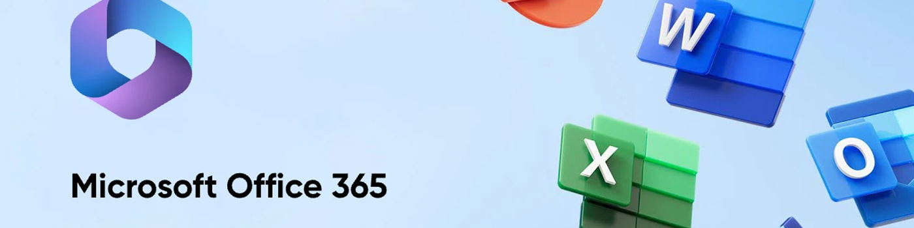

分享 Office 365：完整操作指南
作为领先的订阅共享平台，我们深知共享数字资源的价值和便利性。在本指南中，我们将向你展示如何与家人和朋友无缝共享 Office 365。共享 Office 365 不仅可以最大限度地提升你的订阅价值，还能促进家庭或团队内部的协作和生产力。
按照我们的分步说明，你将了解 有关共享 Office 365 的所有知识，从设置共享权限到解决常见问题。无论你是 Office 365 新手，还是希望增强现有设置，本指南都能满足你的需求。
什么是 Office 365 共享？
Office 365 共享功能允许你将 Office 365 订阅的优势扩展到多个用户，而无需购买额外的许可证。通过共享 Office 365，你可以为家人、朋友或同事提供 Word、Excel、PowerPoint 和 Outlook 等高级应用程序的访问权限，以及额外的存储空间和协作工具。此功能尤其适合希望充分利用 Office 365 工具套件的家庭、小型企业和团队。
Office 365 共享的核心在于，主要订阅者(订阅的所有者)邀请其他人使用其 Office 365 服务。此邀请流程通常包括向受邀者发送电子邮件或链接，受邀者接受邀请即可享受订阅权益。受邀用户可以在其设备上安装 Office 应用，使用 OneDrive 进行云存储，并使用微软的生产力工具套件进行实时协作。
并非所有 Office 365 套餐都支持共享。最常见的允许共享的套餐是 Microsoft 365 家庭版 。
该计划每年收费 99.99 美元，每月收费 9.99 美元，专为共享而设计，最多允许 6 位用户(包括帐户持有人)访问全套 Office 应用程序，每位用户可获得 1 TB 的 OneDrive 存储空间。对于需要单独访问 Office 365 服务的家庭或小型团体来说，它非常理想。每位用户都拥有自己的帐户，并可在多台设备上安装 Office 应用。

共享 Office 365 有几个优点：
- 成本效益 ：多个用户共享一个订阅比为每个用户单独购买订阅更具成本效益。这种方法可以最大限度地提高订阅的价值，并降低总体成本。
- 增强协作 ：Office 365 的工具套件(包括 Teams、SharePoint 和 OneDrive)可促进无缝协作。共享用户可以实时协作处理文档，轻松共享文件，并通过集成的通信工具进行有效沟通。
- 全面访问 ：共享订阅中的每个用户都可以访问所有 Office 应用和服务。这确保每个人都能利用所需的工具来提高工作效率，无论他们使用的是台式机、笔记本电脑、平板电脑还是智能手机。
- 个人账户 ：尽管属于共享订阅，但每个用户都拥有自己的账户，并拥有个性化设置、电子邮件地址和云存储。这确保了用户的隐私以及对数据和文件的个人控制。
通过了解 Office 365 共享的含义及其工作原理，你可以充分利用你的订阅，并享受 Office 365 提供的各种优势。在下一部分中，我们将提供详细的分步指南，指导你如何与家人和朋友共享你的 Office 365 订阅。
共享 Office 365 的分步指南
只需几个简单的步骤，即可与亲朋好友共享你的 Office 365 订阅。遵循本指南，你可以确保团队中的每个人都能享受 Office 365 的各项优势。以下是如何共享 Office 365 订阅的方法。
第 1 步：访问并登录你的 Office 365 帐户
首先访问Office 365 登录页面。输入你的 Microsoft 帐户凭据进行登录。此帐户应与你的 Office 365 订阅相关联。如果你还没有帐户，则需要创建一个。登录后，你将进入 Office 365 主页，你可以在其中管理你的订阅。

第 2 步：导航至订阅管理页面
登录后，点击右上角的个人资料图片或姓名首字母，然后选择"我的 Microsoft 帐户"。在帐户信息中心中，找到并点击"服务和订阅"。此页面将显示你所有有效的 Microsoft 订阅，包括 Office 365。

第 3 步：邀请并添加家人或朋友
找到你的 Office 365 订阅，然后点击"共享"选项卡。点击此按钮即可开始邀请其他人加入你的订阅。你需要 输入你想邀请的家人或朋友的电子邮件地址 。Microsoft 将向你提供的每个地址发送一封邀请电子邮件。

第 4 步：管理和调整权限设置
发送邀请后，每位收件人都需要点击邮件中的链接并登录其 Microsoft 帐户(如果没有帐户，请创建一个)来接受邀请。一旦他们接受邀请，就会被添加到你的订阅中。你可以返回订阅管理页面中的"共享订阅"选项卡来管理共享权限。在这里，你可以查看已接受邀请的人员列表，并根据需要删除用户或调整其权限。

虽然共享 Office 365 通常很简单，但你可能会遇到一些常见问题。如果受邀者未收到邀请邮件，请让他们检查垃圾邮件文件夹。如果他们仍然找不到，你可以从"共享订阅"选项卡重新发送邀请，或使用"复制链接"选项生成新的邀请链接。

如果出现权限或访问问题，请确保受邀者已正确接受邀请并登录正确的 Microsoft 帐户。如果仍然遇到问题，请将其从订阅中删除并重新添加，或许可以解决问题。
按照以下步骤操作，你可以轻松共享 Office 365 订阅，让你的家人或朋友也能从这套 Office 应用程序和服务中受益。这种协作方式不仅可以提高工作效率，还能确保每个人都能访问最新的软件和功能，而无需支付额外费用。
技巧和最佳实践
作为订阅共享平台，环球巴士 致力于提供共享的 Office 365 订阅，商家的首要任务是确保所有用户都能获得稳定、安全、高效的体验。以下是我们实施的一些最佳实践，旨在最大限度地提升服务效益，并保持高标准的用户满意度。
确保共享的 Office 365 帐户的安全
- 强密码策略 ： 强制所有主要 Office 365 帐户使用唯一且强大的密码。这有助于最大程度地降低未经授权访问的风险，并确保每个帐户的安全。
- 定期安全审核 ： 定期进行安全审核，监控账户活动并识别任何可疑行为。这种主动的方法有助于我们快速解决任何潜在的安全威胁。
避免共享 Office 365 订阅中的常见陷阱
- 受控共享 ： 我们遵守 Office 365 订阅计划规定的共享限制。例如，环球巴士的 Microsoft 365 家庭版计划支持最多 6 位用户共享，确保不会超出此限制。
- 活跃账户管理 ： 商家会定期审核和管理 Office 365 订阅的访问权限。这包括移除不再需要访问权限的用户，以避免不必要的风险，并确保账户安全。
环球巴士保持畅通的沟通渠道，确保他们在遇到任何问题或疑问时知道如何联系。这有助于我们及时提供支持并快速解决问题。
通过实施这些最佳实践，我们努力为共享 Office 365 订阅的所有用户提供安全、高效和协作的环境。
结论
在本指南中，我们深入探讨了共享 Office 365 订阅的方方面面。我们涵盖了你需要了解的所有内容，助你最大限度地发挥 Office 365 计划的价值和功能。
在 环球巴士，他家致力于以低廉的价格为你提供最佳的订阅共享服务。选择 环球巴士，你可以享受 Microsoft Office 365 的所有优势，而无需支付高昂的费用。这家平台让你能够轻松且经济地与家人、朋友或同事共享 Office 365，确保每个人都能获得成功所需的强大工具和功能。
不要错过提升生产力和协作能力的机会。立即访问 环球巴士，以极低的价格购买 Microsoft Office 365 订阅!